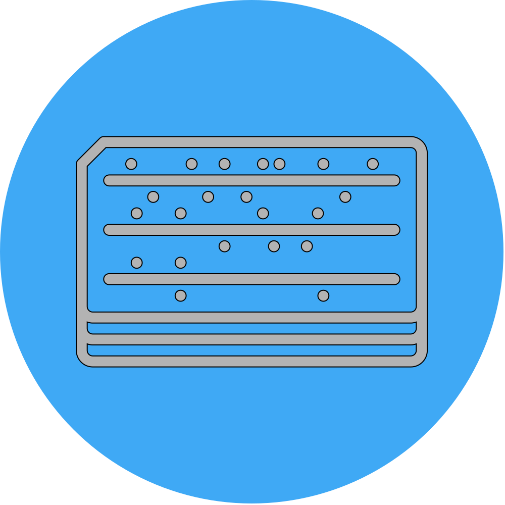

Terminals would be connected to a very large server and users would all access the data at the same time.

1962
The research for the infrastructure of the internet of developed
1966
Bob Taylor had to use multiple computers to do his research, but he knew if all the computers were connected then he would be able to only have to use one
Lawrence Roberts recruited to build this network, since he made a local network at MIT
Built mini computer, so they would “speak” for the large computer
Like a secretary
1968
Larry Roberts sought out engineers to build the ARPA Net
Communication giants, like AT&T, did not want to support their idea
Network four different Interface Message Processor (IMP)
Sigma-7 (UCLA)
SDS-940 (SRI)
IBM-360/75 (UCSB)
PDP-10 (Utah)
BBN Team
Had to figure out if they could do it
1969
Construction of the internet begins
Bob Taylor given $1M to build his idea
January 1969 BBN Team and Roberts Team started Construction
UCLA was to implement the first network node in October 1969
Had to rush the software development
Had to define a common programming language
BBN Troubles
How do you stop the packets from infinitely looping
How do they know when to stop
What stops an overflow
There were problems UNTIL they deployed the first node at UCLA
September 1st, 1969
Hardware sent to UCLA
All 4 sites were connected by the end of ‘69
1971
18 different nodes in the west coast and east coast
Rob Metcalfe connect the node at MIT
The ARPA Net was only develop to transfer data files
Raymond Tomlison develops this "Killer App" which we know all know today as emailing
1972
ARPA turns sci-fi into a reality
Demonstration of the network in Washington D.C.
Internet built with open-architecture
Started to absorb the ability of
TV
Radio
News
Telephone
Anyone could comment and help improve the internet
Conference to show off the network
Contacted the hosts on ARPA net to show off their content
Games
Simulations
Remote Job Entry
AT&T Execs came to view the ARPA net demo
Froze during demonstration
LAN Network
Local Network for computers
WAN Network
Global Netowrk for LAN networks to communicate with others on a different network
TCP/IP Protocol
A way to describe packets and make it less confusing
Gateway
Knew how to talk to connected networks
1983
TCP/IP becomes universal standard for interent
Common network of interconnected networks
If everyone did not use TCP/IP then it would be much harder to communicate with other systems
ARPA was initially a research defense project that only a few colleges could use.
It was released to the public for everyone to use, but struggled to gain traction
Congress made it official for the internet to become a public resources for everyone to use.
President Bush made it an offical law
Tim Berners-lee
Made it easier to "surf the web"
Developed the concept of World Wide Web, WWW
Helped link sites to one another
1992
Only 50 web pages on ARPA Net
1993
Mosaic was replaced into Netscape
It was made by Robert Kahn
It turned the World Wide Web into a graphically rich world